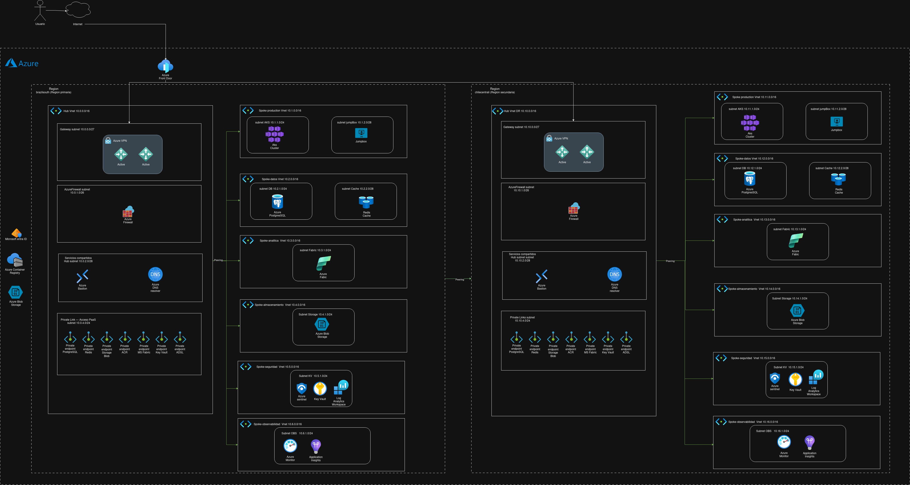
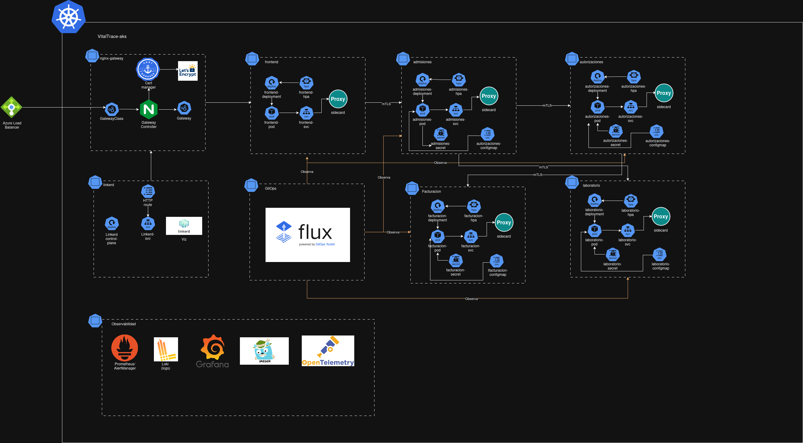
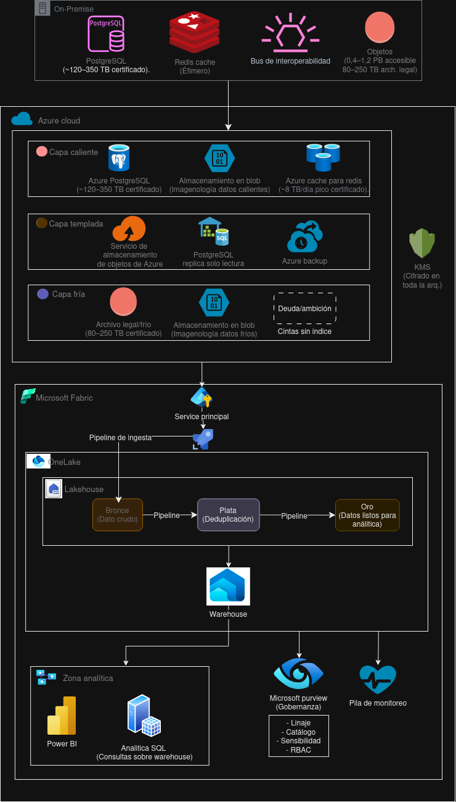
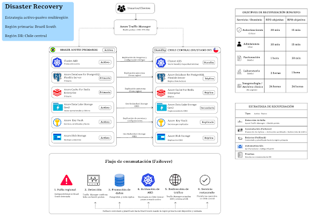

Plataforma nacional de interoperabilidad en salud digital
Migración de infraestructura on-premise (VMware) a una arquitectura cloud-native en Microsoft Azure, mejorando disponibilidad, escalabilidad y trazabilidad de servicios críticos de salud en Colombia.

Arquitectura Azure — Hub-Spoke · Brazil South (primaria) + Chile Central (DR)
VitalTrace HealthNet S.A.S. es un operador nacional de salud digital que integra IPS públicas y privadas, laboratorios, aseguradoras (EPS) y programas de salud pública en Colombia.
Intercambio seguro de información clínica entre actores del ecosistema de salud mediante estándares FHIR/HL7 y APIs REST.
Admisión, autorizaciones, laboratorio, facturación RIPS, portal de pacientes y orquestación de flujos clínicos.
8 concentradores regionales conectados mediante hub-spoke y mesh parcial, adaptados a la heterogeneidad territorial colombiana.
La infraestructura on-premises sobre VMware presenta limitaciones críticas para un operador nacional que debe cumplir con regulación estricta de datos de salud y garantizar continuidad del servicio.
PostgreSQL (prod/QA/dev), Redis (colas, caché, reintentos)
VMs + Docker; Spring Boot: admisión, autorizaciones, laboratorio, RIPS/FHIR, portal
Documentos clínicos, imagenología DICOM, Icinga, Nginx/Apache
Migrar hacia una arquitectura cloud moderna que mejore disponibilidad, escalabilidad y trazabilidad, reduciendo complejidad operativa y fortaleciendo cumplimiento normativo.
AKS privado, servicios PaaS gestionados, IaC con Terraform y GitOps con FluxCD.
mTLS Linkerd, Entra ID P2, Firewall Premium, CMK/HSM y Private Endpoints.
Brazil South (primaria) → Chile Central (DR) con failover < 15 min.
OpenTelemetry + Prometheus/Thanos + Jaeger + Loki + Grafana.
3 oleadas con convivencia híbrida y rollback independiente por fase.
10 Azure Policies, WORM/Legal Hold 15 años, Purview y residencia LATAM.
Topología Hub-Spoke en Azure con segmentación por dominio funcional y inspección centralizada.
Vista general Azure — Hub-Spoke con 7 spokes por dominio · Global VNet Peering BR ↔ CL · Private Endpoints para todo PaaS

AKS VitalTrace — NGINX Gateway · 5 microservicios con mTLS Linkerd · Flux GitOps · Prometheus · Loki · Jaeger · Grafana

Modernización de datos — Tiering Hot/Warm/Cold · OneLake medallion (Bronce → Plata → Oro) · Purview · Power BI

Disaster Recovery — Estrategia activo-pasivo multiregión · Traffic Manager · Failover automatizado · RTO/RPO diferenciado por servicio crítico
Linkerd aplica mTLS a todas las comunicaciones inter-namespace.
15–80 ms · SLA completo · Bogotá, Cali, Medellín, Barranquilla
40–150 ms · SLA parcial · SD-WAN failover
>150 ms · Caché local Redis · Starlink failover
Desde la interacción del paciente hasta el despliegue automatizado en producción.
Paciente / IPS
Consulta portal o envía datos
Azure Front Door
Edge WAF · PoP Bogotá
NGINX Gateway
cert-manager · TLS 1.3
Microservicios
Spring Boot · mTLS Linkerd
Datos
PostgreSQL · Redis · Service Bus
Protección de datos personales de salud con controles automatizados y auditoría continua.
Microsoft Entra ID P2, MFA, Conditional Access y PIM (Just-in-Time).
CMK en Key Vault HSM, TLS 1.3 en aplicación, mTLS entre microservicios vía Linkerd.
Private Endpoints, Firewall Premium (TLS+IDPS), segmentación hub-spoke.
Microsoft Purview: catálogo, linaje, clasificación PHI/PII y accesos por rol.
WORM/Legal Hold 15 años, almacenamiento inmutable y protección contra eliminación.
10 Azure Policies (P-01 a P-10) desplegadas vía Terraform para cumplimiento repetible.
Estrategia de 3 oleadas con convivencia híbrida on-premise + Azure y rollback independiente. Ver cronograma completo en Notion →
Terraform · Entra ID P2 · Hub-Spoke · VPN Site-to-Site
Costo mensual: ~$1,422 USD
AKS · FluxCD · Service Bus Premium · Linkerd
Costo mensual: ~$1,506 USD · SLA > 99.5%
PostgreSQL · Redis Enterprise · Data Box · ADLS Gen2
Costo mensual: ~$1,745 USD · Estado: crítico
| Aspecto | On-Premise | Cloud Azure |
|---|---|---|
| Infraestructura | VMs Docker / VMware | AKS privado · Terraform · multi-región |
| Escalabilidad | Capacidad fija, manual | Autoscaling nodos y pods |
| Disponibilidad | Punto único de falla | DR BR → CL · RTO/RPO diferenciado |
| Seguridad | Perímetro on-prem · Icinga | Firewall Premium · mTLS · Entra ID P2 |
| Costos | CAPEX · sobredimensionado | OPEX · FinOps · ~$1,745 USD/mes infra |
DR multi-región con RTO/RPO diferenciado por capacidad crítica.
AKS con autoscaling ante picos de demanda clínica.
Reservas 1 año en PostgreSQL y AKS. Data Box ahorra $90k–$120k.
Métricas, logs y trazas correlacionadas con linaje completo del dato.
Política como código, residencia LATAM y auditoría automatizada.
Servicios gestionados, GitOps e Infraestructura como Código.
Presentación, documentación técnica, plan de migración y diagramas de arquitectura.
Deck completo del proyecto: contexto de negocio, arquitectura, oleadas, ADRs y costos.
Abrir presentación →Wiki técnica en Notion: especificaciones funcionales, decisiones y referencias del ecosistema VitalTrace.
Ver en Notion →Cronograma detallado por oleadas (A, B, C1/C2/C3), roles, criterios Go/No-Go y matriz de participación.
Ver plan →Documento confidencial v1.0 con arquitectura, WAF, 9 ADRs, costos y conclusiones del proyecto.
Descargar PDF →Diagramas C4, territorio Colombia, red Azure, AKS, CI/CD, DR y gobernanza de identidades.
Abrir Draw.io →Cuatro diagramas oficiales: Azure Hub-Spoke, AKS/Kubernetes, Microsoft Fabric y Disaster Recovery.
Ver diagramas ↓Equipo multidisciplinario responsable de la migración cloud de VitalTrace HealthNet.
Lead DevOps Engineer
Cloud Engineer
Product Owner
DevOps Engineer
SRE Engineer
DevOps Engineer JR
SRE Engineer
Ingeniero DevOps
Profesor — Universidad Icesi